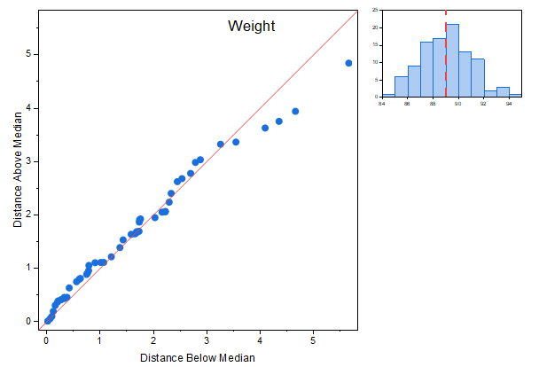
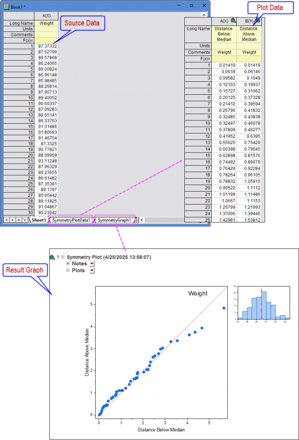
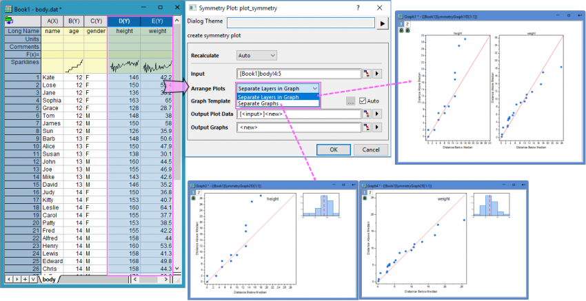

Symmetriediagramm
Symmetry-Plot

Datenanforderungen
Wählen Sie mindestens eine Spalte aus, um ein Symmetriediagramm zu erstellen.
Diagramm erstellen
Wählen Sie die gewünschten Daten aus.
Wählen Sie im Menü Zeichnen > Statistisch: Symmetriediagramm.
Vorlage
Symmetry.otpu (installiert im Origin-Programmordner)
Hinweise
Das Symmetriediagramm kann verwendet werden, um zu bestimmen, ob die Antwortdaten symmetrisch verteilt sind. Um ein Symmetriediagramm zu erstellen, wird Origin
- Ihre Daten in aufsteigender Reihenfolge sortieren;
- den Median des Datensatzes berechnen;
- ein Punktdiagramm mit der oberen Distanz des Medians auf der X-Achse gegen die untere Distanz des Medians auf der Y-Achse zeichnen;
- eine Referenzlinie Y = X hinzufügen, um ein perfekt symmetrisches Beispiel darzustellen;
- ein Histogramm erstellen, um die Form der Verteilung zu zeigen, mit einer Referenzlinie beim Medianwert.
Es werden zwei Ergebnisblätter erstellt, die die Zeichnungsdaten und die Ergebnisdiagramme enthalten:

- Wie Sie im Ergebnisdiagramm sehen können, liegen die Punkte entlang der Linie Y = x und das Histogramm verfügt über eine annähernd symmetrische peakförmige Kurve. Daher können wir schlussfolgern, dass die Antwortdaten in Bezug auf ihren Median symmetrisch sind und eine symmetrische Verteilung haben.
Wenn Sie mehrere Antwortspalten als Eingabe ausgewählt haben, wird durch Wählen des Menüs Zeichnen der Dialog plot_symmetry aufgerufen, in dem Sie die Anordnung der Zeichnungen festlegen können: Separate Layer in Diagramm oder Separate Diagramme.
